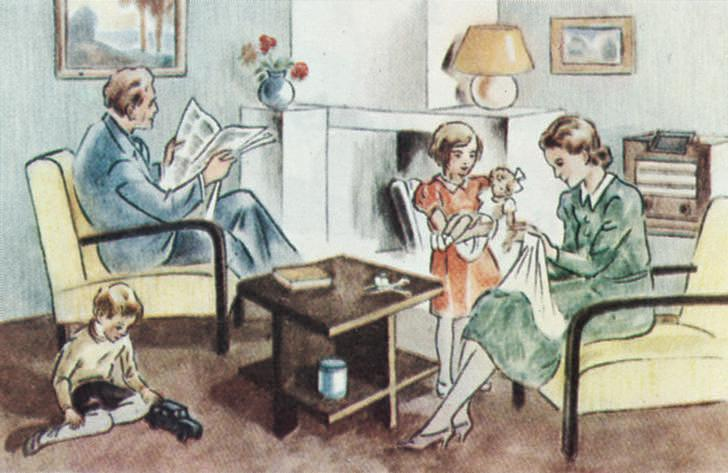
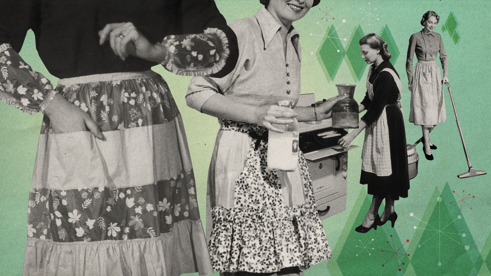

Tradwives er en betegnelse som beskriver kvinner som bevisst velger å leve et tradisjonelt husmorliv, ofte med et ideal om at kvinner skal ha en mer hjemmebasert rolle mens menn er hovedforsørgere. Dette fenomenet har oppstått som en reaksjon på moderne feminisme og likestillingsbevegelser, der tradwives fremmer tradisjonelle kjønnsroller og verdier fra tidligere generasjoner. Mange tradwives verdsetter husarbeid, matlaging, og omsorg for barn som sine primære oppgaver, og de ser på dette som en styrke og en bevisst livsstil. Selv om bevegelsen har fått støtte fra enkelte miljøer, har den også blitt kritisert for å fremme en utdatert kjønnsrollefordeling og for å motarbeide likestillingsfremskritt.
I vikingtiden var kjønnsroller relativt fleksible sammenlignet med andre samtidige samfunn, men det var likevel klare forventninger til menns og kvinners oppgaver. Menn var ofte krigere, bønder eller handelsmenn, og de hadde ansvar for å beskytte og forsørge familien. Kvinner, på sin side, hadde en sentral rolle i hjemmet, men de kunne også ha betydelig makt og innflytelse, spesielt i fravær av mennene. De styrte husholdningen, hadde ansvar for gårdsdriften, og kunne i noen tilfeller drive handel. Det fantes også eksempler på kvinner som ble krigere, kjent som skjoldmøyer, selv om dette var sjeldnere. Vikingkvinner hadde rett til eiendom og skilsmisse, noe som ga dem større juridisk frihet enn mange kvinner i andre kulturer på samme tid.
En sammenligning mellom friheten til kvinner som lever som "tradwives" og kvinner i vikingtiden viser både likheter og forskjeller, men også viktige nyanser. "Tradwives" velger å følge tradisjonelle kjønnsroller, hvor de ser verdien i å være hjemme, ta seg av barn og la mannen være hovedforsørgeren. Dette valget kan ses som frivillig, men det er ofte en del av en bevegelse som idealiserer gamle verdier og ser på kvinners rolle i hjemmet som essensiell. Friheten her ligger i det personlige valget om å tilslutte seg denne livsstilen, men mange vil påpeke at den kan medføre begrensninger i kvinners økonomiske uavhengighet og samfunnsdeltakelse. I vikingtiden hadde kvinner en mer strukturert, men også dynamisk rolle. Vikingkvinner hadde juridiske rettigheter som å eie eiendom og søke skilsmisse, noe som ga dem en viss frihet og autonomi i hverdagen. De hadde ansvar for gårdsdrift og hushold, og i noen tilfeller også handel, mens mennene var på tokter. Selv om det var et klart skille mellom kjønnene i mange oppgaver, hadde kvinner i vikingtiden en større grad av økonomisk og juridisk selvstendighet sammenlignet med hva mange tradwives opplever i dag. Der tradwives velger en mer avhengig rolle innenfor et forhold, var vikingkvinner ofte nødt til å være mer selvstendige, spesielt i mennens fravær. Så selv om både "tradwives" og kvinner i vikingtiden levde i samfunn med tradisjonelle kjønnsroller, var friheten til vikingkvinner mer forankret i praktisk selvstendighet og lovgivning, mens friheten til "tradwives" ofte er en bevisst selvbegrensning som følge av et personlig verdigrunnlag.